Glyntown Care Centre
A complete modernisation of a nursing home's online presence — redesign, information architecture, SSL security, and SEO optimisation.
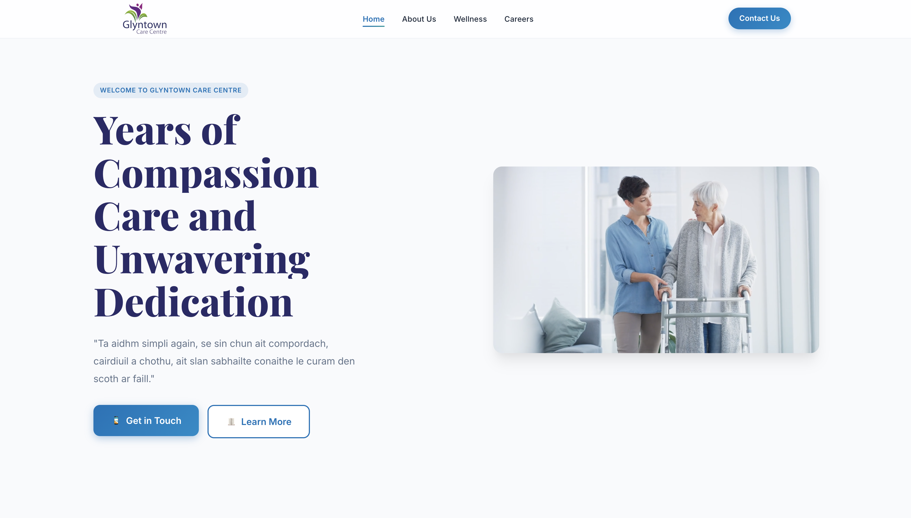
glyntowncare.ie Visit live websiteBackground
Glyntown Care Centre, a reputable nursing home, faced challenges with its online presence due to an outdated website. The existing design lacked modernity, responsiveness, and an optimal user experience. Additionally, security measures such as SSL certificates were missing, and there was no implementation of Google SEO practices. This situation prompted the need for a comprehensive overhaul to better represent the quality care and services provided by Glyntown Care Centre.
Challenges
Outdated Design: The website's design failed to meet contemporary standards, undermining trust and professionalism.
Poor Information Presentation: The outdated design made it challenging to present essential information effectively.
Security Concerns: The absence of SSL certificates posed a security risk, potentially deterring potential clients.
SEO Neglect: The website did not employ basic Google SEO practices, limiting online visibility.
The Old Design
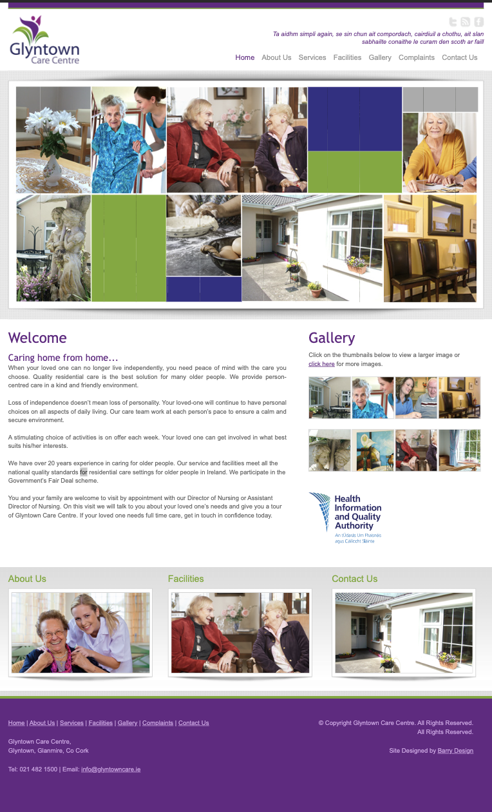
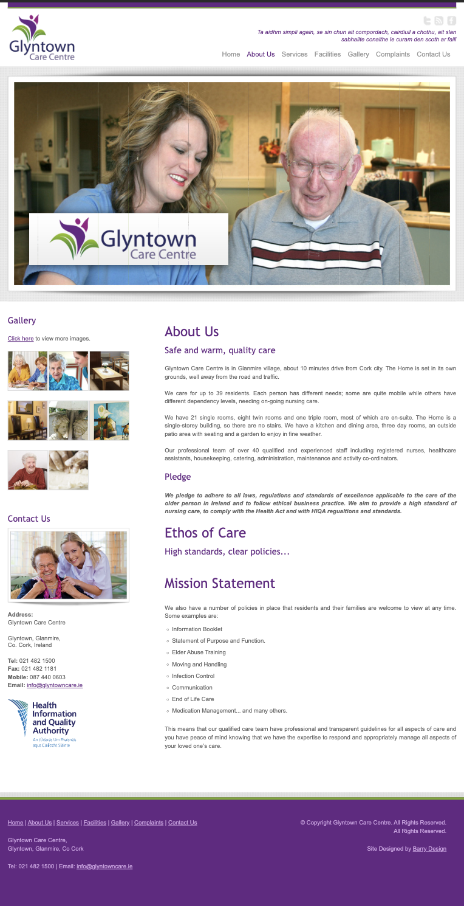
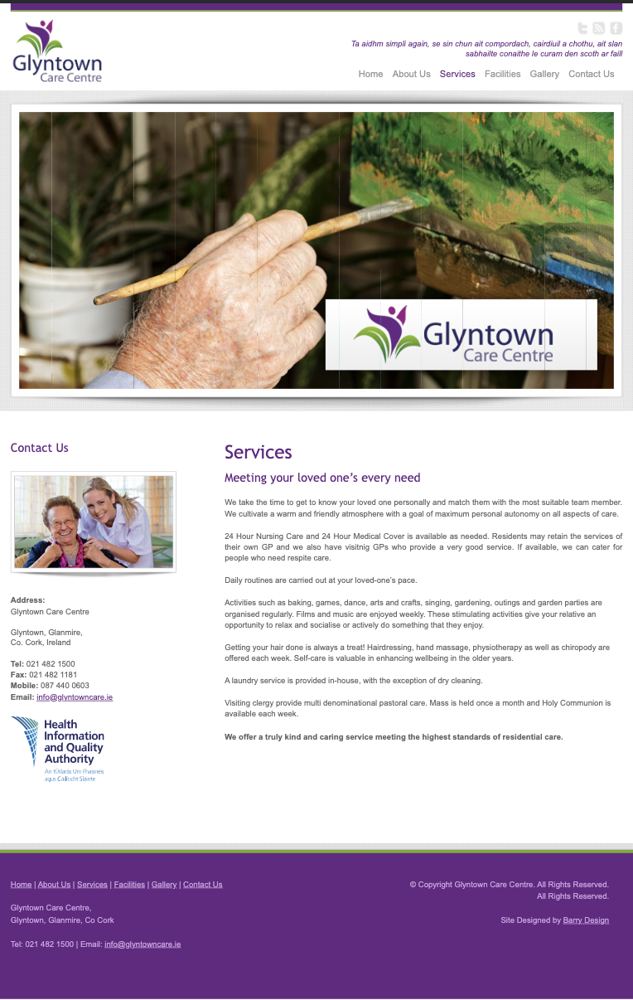
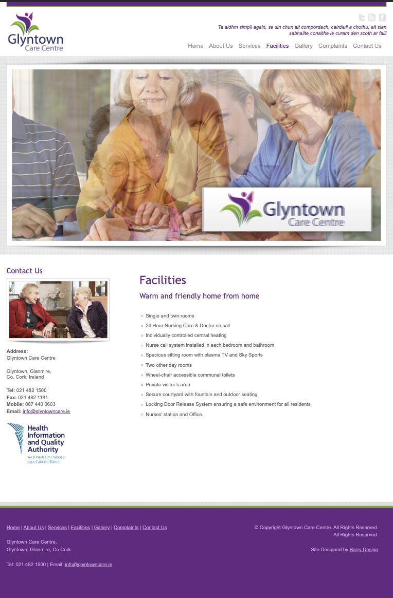
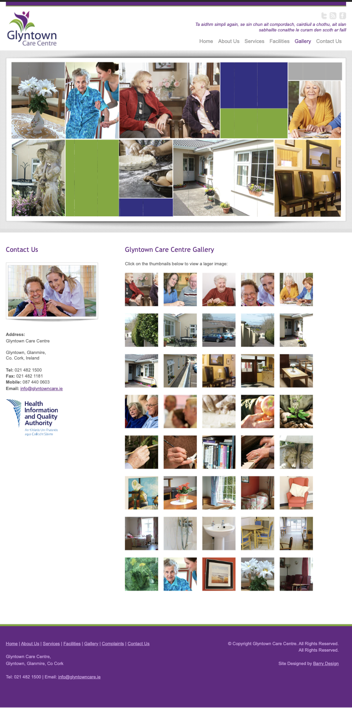
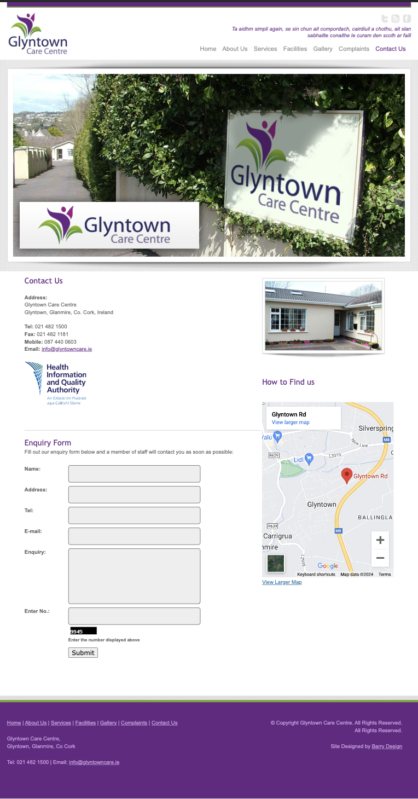
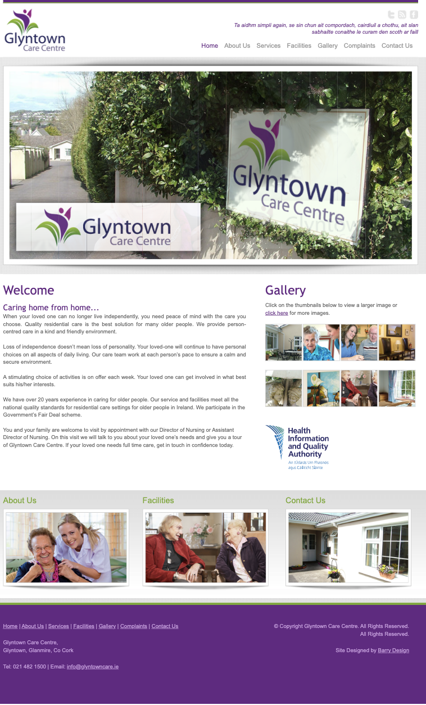
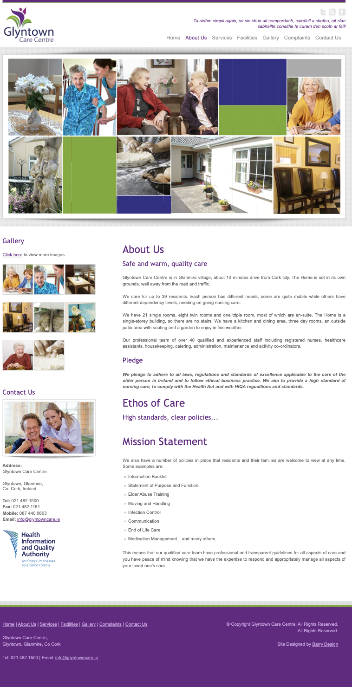
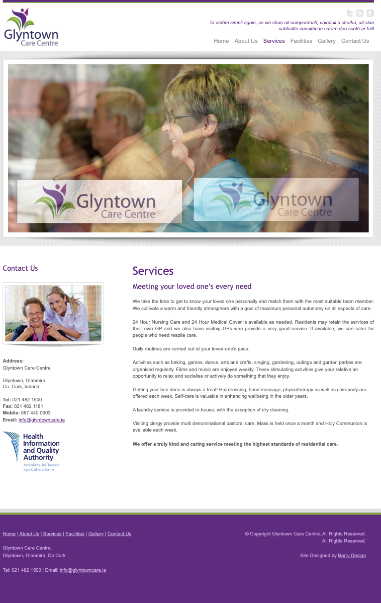
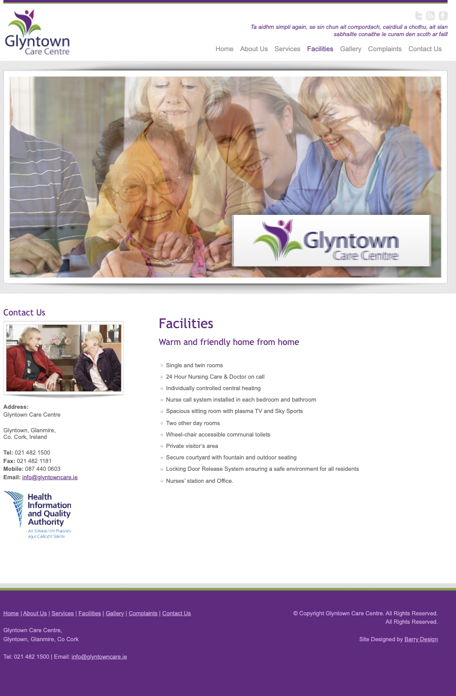
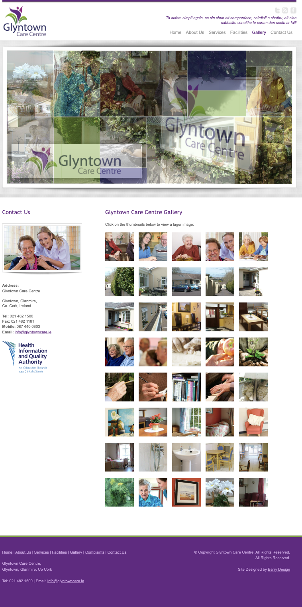
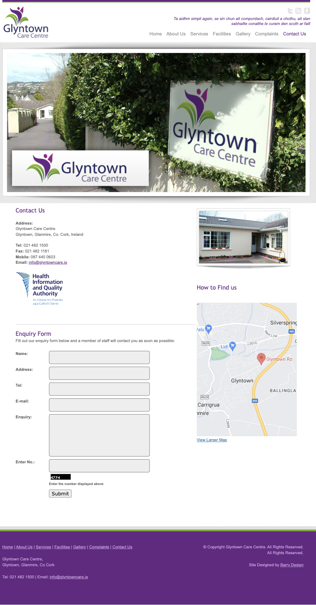
Objectives
Redesign and Modernize: Develop a visually appealing and modern design that enhances user experience.
Improve Information Accessibility: Ensure that essential information is easily accessible and well-organized.
Implement SSL Certificates: Enhance security by implementing SSL certificates to protect sensitive information.
Optimize for SEO: Implement basic SEO practices to improve search engine ranking and online visibility.
Solution
Website Redesign: Engage a professional web design agency to create a modern, responsive, and visually appealing website.
Information Architecture: Develop a clear and user-friendly structure to organize content logically.
SSL Certificate Implementation: Partner with a reputable web hosting provider to obtain and install SSL certificates.
SEO Optimization: Collaborate with an SEO expert to optimize the website for search engines.
Outcome
The redesigned Glyntown Care Centre nursing home website successfully addressed the identified challenges. The modern design, improved information architecture, SSL implementation, and SEO optimization collectively contributed to a more engaging, secure, and visible online presence.
Results
Enhanced User Experience: The modern design and improved information architecture made it easier for visitors to navigate the website, resulting in increased user satisfaction.
Improved Security: SSL certificate implementation ensured secure data transmission, building trust among website visitors and protecting sensitive information.
Increased Online Visibility: SEO optimization efforts led to improved search engine rankings, making Glyntown Care Centre more discoverable to individuals searching for nursing home services in the area.
Positive Brand Perception: The website redesign positively impacted Glyntown Care Centre's brand perception, showcasing the nursing home as a modern, professional, and trustworthy establishment.
Conclusion
The comprehensive redesign and optimization of Glyntown Care Centre's nursing home website addressed critical issues related to outdated design, poor information presentation, security concerns, and SEO neglect. The successful transformation resulted in an enhanced online presence, improved user experience, and increased visibility in the competitive healthcare industry. Glyntown Care Centre can now confidently connect with potential clients online and showcase its commitment to providing quality care for the elderly.